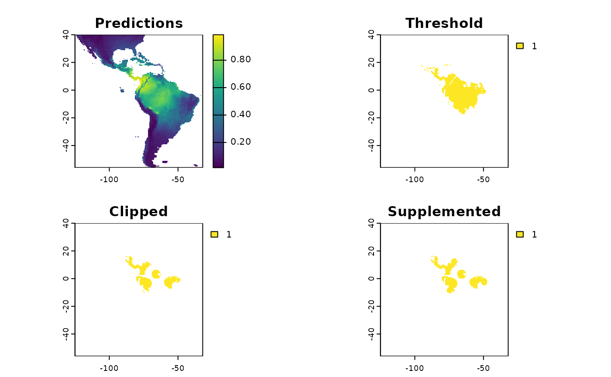

Showcasing Sampling Schemes with Sloths
safeHavens.RmdsafeHavens can be installed directly from github, no
plans are made to release the package to CRAN as it’s user base is
relatively niche relative to a typical R package.
# `devtools`, or a similar package, is required to install packages from github
# install.packages('devtools')
# devtools::install_github('sagesteppe/safeHavens')
# lot's of user have issues with devtools, on Windows I believe, but `remotes` tends to work well.
# install.packages('remotes') # remotes is very similar and a good alternativ for this use case.
remotes::install_github('sagesteppe/safeHavens') # blah even same function name!Once installed safeHavens can be loaded like any other
package, whether they are installed from CRAN or github. We will also
load ggplot2 for it’s excellent ability to plot simple
features, and tidyverse for pushing some columns around
etc.
library(safeHavens)
library(ggplot2)
library(sf)
library(terra)
library(spData)
library(dplyr)
library(patchwork)
set.seed(23)
planar_proj <- '+proj=laea +lon_0=-421.171875 +lat_0=-16.8672134 +datum=WGS84 +units=m +no_defs'Notes about safeHavens
This package helps germplasm curators communicate areas of interest to collection teams for them to collect new material for accession. It provides seven different sampling approaches for curators to choose from for each individual taxon they hope to process. It also allows for easy integration into existing workflows and will put out the required spatial data to share with collection teams.
Each of the approaches are based on standard practices in ecology,
and reflect very basic tenets of population genetics, and Toblers first
law of geography. They have various trade offs in terms of computational
and environmental complexity. The table below presents the currently
implemented sampling scheme and the user facing function associated with
them. In my mind the first four functions are really flavors of the same
process, one whereby we try and partition the species range into chunks
of similar sizes. However, as is often the case four things which seem
very similar to me may have enormously different results in
implementation. The fifth method IBDBasedSample is largely
in a class of it’s own, in lieu of using the continuity of
geographic space as it’s primary method, it focuses on the discontinuity
of space and using distance matrices and clustering to determine which
patches of range are more close to each than other patches. The impetus
behind this method is of course Sewall Wrights Isolation by Distance
(1943).
The EcoregionBasedSample may be the most commonly
encountered method in North America and in various formats is driving
two major germplasm banking projects in both the Midwest and
Southeastern United States, as well as at a high level, composing the
way that numerous native seed collection coordinators are structured in
the West. This method using environmental variation as an implicit guide
to targeting populations for seed collections, i.e. the different
ecoregions serve as a stratification agent. In broad strokes, the
general thinking is that these regions represent continuous transitions
in the environment faced by the species, and populations across these
ranges will be differently adapted to these environments. Given it’s
relative popularity in implementation, this function has more arguments
than it’s counterparts, which will be discussed below.
The final function EnvironmentalBasedSample is both the
most computationally expensive, and the most environmentally explicit.
This function will rely on a Species Distribution Model, generated via a
generalized linear model, supported by this package, to cluster
populations based on environmental variables related to their observed
distributions and the spatial configuration and distance between them.
On paper, this draws together all aspects of the above functions,
however no testing of this approach has been implemented. It will be
discussed below in depth.
| Function | Description | Comp. | Envi. |
|---|---|---|---|
GridBasedSample |
Creates and merges n grids over area | L | L |
PointBasedSample |
Creates points to make grids over area | L | L |
EqualAreaSample |
Breaks area into similar size pieces | L | L |
OpportunisticSample |
Using PBS with existing records | L | L |
IBDBasedSample |
Breaks species range into clusters | H | M |
EcoregionBasedSample |
Using existing ecoregions to sample | L | H |
EnvironmentalBasedSample |
Uses correlations from SDM to sample | H | H |
Note in this table ‘Comp.’ and ‘Envi.’ refer to computational and environmental complexity respectively, and range from low (L) through medium to high.
General notes about this vignette
This package is strongly focused on plants, no disrespect to animals, they just never occurred to me during development. However, to make it up to animal people, we will use a Sloth, which I think is Bradypus variegatus it’s both a maniacally and mischievous looking little thing. Beyond looking at the inspiration for most Jim Henson puppets above, we will treat Bradypus more like a plant species when we discuss these sampling schemes - that is we will assume we are focused on organisms which seldom move great distances in dispersal processes.
We can access some data on Bradypus from the
dismo package - presumably short for ‘Distribution
Modelling’, which was created by Robert Hijman and others. We
will use a couple other dismo functions in this package,
and we will utilize some spatial data from it, It’s a good package to be
familiar with. If you want to read more about dismo and
distribution modelling in general here is an awesome bookdown resource
written by Hijman and
Elith - aspects of this vignette are definitely based on it. We will
use Species Distribution Models (SDMs) as the input variable to many of
the arguments in this function - don’t get caught up in the details of
making them. These days you can get good results out of essentially
entirely automated pipelines, we’ll have the truncated process outlined
here in a chunk, but I honestly argue you should ignore this section the
first few times you read this document, and go back for the details
(discussed in the link above) only if you decide to pursue the route of
EnvironmentalBasedSample. I may be too optimistic in
thinking that any one of these schemes will give adequate results for
sample design, but some may be better for certain species and
projects.
Future users will need to obtain their own occurrence records for
using with this package. The r package rbgif is a fantastic
way to do this, a well documented article linking to several vignettes
for the package is here.
Species Distribution Modelling (skip me your first few read throughs?!)
If you are interested in visualizing what a sampling scheme under
safeHavens most complex function
EnvironmentalBasedSample requires, you can explore this
section to understand the costs required to achieve this process. It
goes on for a while, so I almost recommend checking this section last.
In the meantime, if you still want to see the results from
EnvironmentalBasedSample compared to the other functions,
you can load the results from disk, they are distributed with the
package.
x <- read.csv(file.path(system.file(package="dismo"), 'ex', 'bradypus.csv'))
x <- x[,c('lon', 'lat')]
x <- sf::st_as_sf(x, coords = c('lon', 'lat'), crs = 4326)
files <- list.files(
path = file.path(system.file(package="dismo"), 'ex'),
pattern = 'grd', full.names=TRUE )
predictors <- terra::rast(files) # import the independent variablesThe goal of most SDM’s is to create a model which most accurately predicts where a species will be located in environmental space, and hence geographic space. The goal of these models are to understand the degree, and direction, to which various environmental features correlate with a species observed range. Accordingly, they are not optimized for use in making the typical decisions associated with species distribution models, i.e. conservation area planning. Rather the models supported in this package are solely focused on estimating the effects of various environmental parameters on the species distribution.
sdModel <- elasticSDM(
x = x, predictors = predictors, quantile_v = 0.025,
planar_proj = planar_proj)We use the caret package to help out with our
glmnet modelling, it’s unnecessary, but it provides output
which is very easy to explore and interact with. While much of
caret functionality has been improved on in
tidymodels and associated packages by Max Kuhn (also the
lead caret author), caret is pretty stable and
will serve our purposes fine. What makes an elastic net model
interesting is that it is able to bridge the worlds of lasso and ridge
regression by blending the alpha parameter. Lasso has an alpha of 0,
while Ridge has an alpha of 1. Lasso regression will perform automated
variable selection, and can actually drop (or ‘shrink’) them from a
model, while Ridge regression will keep all variables and if correlated
features are present give some contributions to each of them. An elastic
net blends this propensity to drop or retain variables whenever it is
used. caret will test a range of alphas to accomplish
this.
Note that by using this we don’t exactly get a feel for which variable is really correlated with a an event, but we do at least get a sense of how a set of variables affects the range. Infer from this at your own risk! Inference from SDM’s is something I do not recommend except in the most special of circumstances anyways.
sdModel$CVStructureHere we can see how the elastic net decided which is the top model. We used Accuracy rather than Kappa as the main criterion for model selection.
sdModel$ConfusionMatrixHere we can see how our selected model works on predicting the state
of test data. Note these accuracy results are slightly higher than those
from the CV folds. This is not a bug, CV folds are testing on their own
holdouts, while this is a brand new set of holdouts. The main reason the
confusion matrix results are likely to be higher is due to spatial
auto-correlation which are not address in a typical ‘random split’ of
test and train data. In order to minimize the effects of
spatial-autocorrelation on our model we use CAST under the
hood which allows for spatially informed cross validation.
Consider the output from CVStructure to be a bit more realistic.
terra::plot(sdModel$RasterPredictions)SDM’s produce surfaces which display the probability of suitable
habitat across a landscape. Many people want a binary prediction surface
from them, i.e. is it more or less probable that suitable habitat
for this taxon exists in this particular location (grid cell)?.
Going from a continuous probability surface to a binary surface loses a
lot of information, but in many use cases is essential to reduce
computational complexity. If you are interested in the caveats
associated with this Frank Harrell has written extensively on the topic.
We will use binary surfaces for implementing our sampling procedures
across a species range. The function PostProcessSDM is used
for this purpose.
Historically, when assessing probability output 0.5 probability was
used as a threshold, probabilities beneath if being considered ‘Not
suitable’, while probabilities above are classified as ‘Suitable’. This
works well for many use cases, but I argue that thresholding is outside
the domain of statistics and in the realm of practice. My motto for
implementing models, is a slight elaboration of George Box’s aphorism,
“All models are wrong, some are useful - how do you want to be
wrong?”. Our goal of sampling for germplasm conservation is to
maximize the representation of allelic diversity across the range of a
species. In order to do this, we need a good understanding of what the
species actual range is, hence I am more happy to predict the species
is present where it is not, than to predict it is absent where
it actually grows. Hence my preferred thresholding statistic is
Sensitivity, over any metric which weighs false predicted
presences. This argument is free to vary and supports any of the
threshold values calculated by dismo::threshold, explore it
to better understand it’s options.
Until now, you may be wondering why the function which achieves this
is named PostProcessSDM rather ThresholdSDM,
the reason for this perceived discontinuity is that the function does
another process in it’s second portion. Using all initial occurrence
data, both the sets that went into our training and test data for
developing the statistical model, we create ‘buffers’ around these
points to ensure that none of the known occurrence points are ‘missing’
from the output binary map. This is a two edged sword, where we are
again address the notion of dispersal limitation, and realize that not
all suitable habitat is occupied habitat.
What the PostProcessSDM function does is it again
creates cross validation folds, and selects all of our training data. In
each fold if then calculates the distance from each occurrence point to
it’s nearest neighbor. We then summarize these distances and can
understand the distribution of distances as a quantile. We use a
selected quantile, to then serve as a buffer. Area with predicted
suitable habitat outside of this buffer become ‘cut off’ (or masked)
from the binary raster map, and areas within buffer distance from known
occurrences which are currently masked are reassigned as probabilities.
The theory behind this process in underdeveloped and nascent, it does
come down to the gut of an analyst. With the Bradypus data set
I use 0.25 as the quantile, which is saying “Neighbors are generally
100km apart, I am happy with the risk of saying that 25km within each
occurrence is occupied suitable habitat”. Increasing this value
to say 1.0 will mean that no suitable habitat is removed, decreasing it
makes maps more conservative. The cost with increasing the distances
greatly is that the sampling methods may then puts grids in many areas
without populations to collect from.
threshold_rasts <- PostProcessSDM(
rast_cont = sdModel$RasterPredictions,
test = sdModel$TestData,
planar_proj = planar_proj,
thresh_metric = 'sensitivity', quant_amt = 0.5)We can compare the results of applying this function side by side using the output from the function.
terra::plot(threshold_rasts$FinalRasters)glmnet is used for three main reasons, 1) it gives
directional coefficients and so we have a feel for how each 1 unit
increase in an independent variable predicts the response, In my mind
this is a big improvement over ‘Variable Importance Factors’ where we
just know that certain variables contributed more to the model than
others.
2) It maintains some degree of automated selection reducing the work an
analyst needs to do, i.e. you can process many species without spending
too much time on any single one.
3) glmnet actually re-scales all variables before model
generation, which I suppose can be implemented with other models, we
will use the same re-scaling that glmnet does to transform
our independent variables in the raster stack and then multiply them by
their beta-coefficients.
In this way our raster stack becomes representative of our model, we can
then use these values as the basis for hierarchical cluster later
on.
# CREATE A COPY OF THE RASTER PREDICTORS WHERE WE HAVE
# STANDARDIZED EACH VARIABLE - SO IT IS EQUIVALENT TO THE INPUT TO THE GLMNET
# FUNCTION, AND THEN MULTIPLIED IT BY IT'S BETA COEFFICIENT FROM THE FIT MODEL
# we will also write out the beta coefficients using writeSDMresults right after
# this.
rr <- RescaleRasters(
model = sdModel$Model,
predictors = sdModel$Predictors,
training_data = sdModel$TrainData,
pred_mat = sdModel$PredictMatrix)
terra::plot(rr$RescaledPredictors)We can see that the variables are ‘close’ to being on the same scale, this will work in a clustering algorithm. If any of the layers are all the same color (maybe yellow?) that means they have no variance, that’s a term that was shrunk from the model. It will be dealt with internally in a future function. The scales of the variables are not exact, because they are weighed by their coefficients in the model
print(rr$BetaCoefficients)We can also look at the coefficients for each variable.
glmnet returns the ‘untransformed’ variables, i.e. the
coefficients on the same scale as the input rasters, we calculate the BC
right afterwards.
safeHavens generates all kinds of things as it runs
through the functions elasticSDM,
PostProcessSDM, and RescaleRasters. Given that
one of these sampling scheme may be followed for quite some time, I
think it is best practice to save many of these objects. Yes, they will
take up some storage space, but storage is virtually free these days
anyways. So why not write out all of the following items? I test write
them in a directory which exists for the project associated with the
creation of this R package, just save them somewhere and delete them
after this. These test files are tiny anyways.
bp <- '~/Documents/assoRted/StrategizingGermplasmCollections'
writeSDMresults(
cv_model = sdModel$CVStructure,
pcnm = sdModel$PCNM,
model = sdModel$Model,
cm = sdModel$ConfusionMatrix,
coef_tab = rr$BetaCoefficients,
f_rasts = threshold_rasts$FinalRasters,
thresh = threshold_rasts$Threshold,
file.path(bp, 'results', 'SDM'), 'Bradypus_test')
# we can see that the files were placed here using this.
list.files( file.path(bp, 'results', 'SDM'), recursive = TRUE )And there you have it, all the steps to make a species distribution model - or rather to get the coefficients from a species distribution model! We will play around with it as an example data set to compare our buffered distance results to at the end.
Alternative to SDM, just buffer! (start reading here your first few times!)
Creating the SDMs is a whole process, and not all users may want to
create them. Here we provide an approach which will give us results we
can work with, and is computationally cheap.
As a minimalist that would probably just use the
IsolationByDistance function, this would almost certainly
be the route I took to indentifying collection areas.
It relies on one input, the same occurrence data as above, and a
simple process - drawing a circle at a specific radius around each
observation point! Here we are showing the second of two major packages
which this package depends on, sf. sf relies
on simple feature geometries and is now the workhorse of most all vector
data analysis in R. It is very well documented and tested, if you are
unfamiliar with it you should consider it to be the dplyr
of the spatial data ecosystem in R. In this vignette I use
:: notation so you can get an idea of where the functions
are coming from, and you’ll notice a lot of sf::st_*.
planar_proj =
'+proj=laea +lon_0=-421.171875 +lat_0=-16.8672134 +datum=WGS84 +units=m +no_defs'
x <- read.csv(file.path(system.file(package="dismo"), 'ex', 'bradypus.csv'))
x <- x[,c('lon', 'lat')]
x <- sf::st_as_sf(x, coords = c('lon', 'lat'), crs = 4326)
x_buff <- sf::st_transform(x, planar_proj) |>
sf::st_buffer(125000) |> # we are working in planar metric coordinates, we are
sf::st_as_sfc() |> # buffer by this many / 1000 kilometers.
sf::st_union()
plot(x_buff)
Voila! That’s the whole process. Just play around with the distances until you get something which looks OK. How do I define ‘OK’?.. A feeling in the gut that your boots are tingling. Note that while the buffered polygons may look a little nebulous now, we’ll have them on maps with some more context in just a couple steps.
Just load the SDM!
The package also has an SDM projection saved in the data we can just load that too for a couple comparisions.
sdm <- terra::rast(file.path(system.file(package="safeHavens"), 'extdata', 'Bradypus_test.tif'))
terra::plot(sdm)
Now prep some data for visualizing the results
While not necessary, we are going to add some context to our maps
which should help you interpret the results of the various functions
from the package. We will use the spData package which uses
naturalearth data for it’s world data and is suitable for
creating effective maps at a variety of resolutions.
x_extra_buff <- sf::st_buffer(x_buff, 100000) |> # add a buffer to 'frame' the maps
sf::st_transform(4326)
americas <- spData::world
americas <- sf::st_crop(americas, sf::st_bbox(x_extra_buff)) |>
dplyr::select(name_long)
#> Warning: attribute variables are assumed to be spatially constant throughout
#> all geometries
bb <- sf::st_bbox(x_extra_buff)
map <- ggplot() +
geom_sf(data = americas) +
theme(
legend.position = 'none',
panel.background = element_rect(fill = "aliceblue"),
panel.grid.minor.x = element_line(colour = "red", linetype = 3, linewidth = 0.5),
axis.ticks=element_blank(),
axis.text=element_blank(),
plot.background=element_rect(colour="steelblue"),
plot.margin=grid::unit(c(0,0,0,0),"cm"),
axis.ticks.length = unit(0, "pt"))+
coord_sf(xlim = c(bb[1], bb[3]), ylim = c(bb[2], bb[4]), expand = FALSE)
rm(x_extra_buff, americas)Running the Various Sample Design Algorithms
Now that we have some data which can represent species ranges, we can run the various sampling approaches. The table in the introduction is reproduced here for your leisure.
| Function | Description | Comp. | Envi. |
|---|---|---|---|
GridBasedSample |
Creates and merges n grids over area | L | L |
PointBasedSample |
Creates points to make pieces over area | L | L |
EqualAreaSample |
Breaks area into similar size pieces | L | L |
OpportunisticSample |
Using PBS with existing records | L | L |
IBDBasedSample |
Breaks species range into clusters | H | M |
EcoregionBasedSample |
Using existing ecoregions to sample | L | H |
EnvironmentalBasedSample |
Uses correlations from SDM to sample | H | H |
Note in this table ‘Comp.’ and ‘Envi.’ refer to computational and environmental complexity respectively, and range from low (L) through medium to high.
Grid Based and Point Based Sample
Ecologists love grids. All of us are taught to love grids for
sampling. Grids are create for contiguous things. Species ranges are
often not contiguous; curators and analysts in our geographically great
ecosystems, e.g. the steppes, prairies, tundra, and taiga might find
these useful.
Surprisingly coding the functions to create a grid based sample where
the most difficult of anything in this whole package. So why did I do
it, you ask? Because I too was trained tounequivocally love grids, I
also was already loathe to hear the question after a talk “Why
didn’t you code grids? I love grids? I don’t think these comparisons are
complete until we see grids. We gave you hors d’oeuvres and you
gave us shit…”
You can look at the output below to see why grids are not great for this type of problem.
The first step in grid sampling is determining an OK number of grids to try and draw as a starting point, if we want 20 collections we will need more than 20 grids, because several will be merged into the larger ones. Using the aspect ratio of a simple bounding box around the area will be analysing, the function will determine a default number of grids (‘Original’) for testing. Using these defaults it will create a few other sets of grids as well, by either removing one of two grids per direction. Theoretically you could automate grid selection by comparing the number of grids and the minimization of variance. To be safe I wouldn’t consider configurations which generate less than 25 of these initial grids.
tgs <- TestGridSizes(x_buff)
print(tgs)
#> Name Grids Variance GridNOx GridNOy
#> 1 Smallest 34 599.9513 8 6
#> 2 Smaller 28 813.2043 7 5
#> 3 Original 24 862.5458 6 4
#> 4 Larger 18 681.7667 5 3
#> 5 Largest 13 1182.8457 4 2
plot(tgs$Grids, tgs$Variance, xlab = 'Grid Number', ylab = 'Variance',
main = 'Number of grids and areas overlapping species range')
text(tgs$Grids, tgs$Variance + 25, labels=tgs$Name, cex= 0.7)
abline(v=20, col="red")
abline(v=25, col="orange")
tgs <- tgs[tgs$Name=='Smaller',]Essentially we need more than 20 grids, but realistically using more
than 25 grids - depending on the complexity of the species range - tends
to be an effective floor. In the table and plot above I opt for using
the ‘Smaller’ option, with 28 grids generated by prompting
sf::st_make_grid with 7 grids in the x direction and 5 in
the y direction. You can kind of think about this like an elbow
plot, but the samples are so few you won’t get the characteristic
shape.
grid_buff <- GridBasedSample(x_buff, planar_proj, gridDimensions = tgs)
gbs.p <- map +
geom_sf(data = grid_buff, aes(fill = factor(ID))) +
# geom_sf_label(data = grid_buff, aes(label = Assigned), alpha = 0.4) + # on your computer, doesnt work at vignette size
labs(title = 'Grids') +
coord_sf(expand = F)
gbs.p
With the grids we drew the pre-specified number of grids across the species range, and then merged them together as required to get the results. We will essentially do the inverse in this step, rather than drawing boundaries - i.e. grid cells, we will draw points in the center of grid cells. Essentially allowing the features to ‘grow’ a little more naturally, to my thinking. I also think these results work a little bit better on a fragmented range, their is still some odd clipping, where minor portions of a section of range are assigned to a different grid, but a little bit better.
pbs <- PointBasedSample(x_buff)
pbs.sf <- pbs$Geometry
pbs.p <- map +
geom_sf(data = pbs.sf, aes(fill = factor(ID))) +
# geom_sf_label(data = pbs.sf, aes(label = ID), alpha = 0.4) +
labs(title = 'Point') +
coord_sf(expand = F)
pbs.p
Equal Area Sample
Perhaps the simplest method which is offered in
safeHavens is EqualAreaSample. It simply
creates many points, pts defaults to 5000, within our
target polygon and then subjects them to k-means sampling where the
groups are specified by n our target number of collections.
The individual points then assigned to these groups have polygons which
‘take’ up all of the map space developed, and are intersected back to
the species range, and the area of each polygon is then measured. This
process will be ran a few times, defaulting to 100 reps,
and the set of polygons which was created during these reps with the
smallest variance in polygon size will be selected to be returned from
the function.
This differs from point based sampling in that the above instance, we start with a few regulary spaced points to grow from, here we take a step back and by using many points let the clusters grow themselves to similar sizes.
eas <- EqualAreaSample(x_buff, planar_projection = planar_proj)
#> Warning: did not converge in 10 iterations
eas.p <- map +
geom_sf(data = eas$Geometry, aes(fill = factor(ID))) +
# geom_sf_label(data = eas.sf, aes(label = ID), alpha = 0.4) +
labs(title = 'Equal Area') +
coord_sf(expand = F)
eas.p In my mind the results look quite similar to point based sample.
In my mind the results look quite similar to point based sample.
Opportunistic Sample
To be blunt, while there are many new players to the germplasm
conservation table (and we are thrilled to have you here!), many
existing collections have largely grown out of opportunity (which we are
still very happy about). Many Curators may be interested in how much
they can embed their existing collections into a sampling framework. The
function OpportunisticSample makes a few very minor
modifications to the point based sample to try and maximize an existing
collection. It doesn’t always work exceptionally, especially when a
couple collections are very close to each other, but it may be a
beneficial tool in the belt. As we have observed, the three previous
sampling schemes end of with somewhat similar results - so we took used
the PointBasedSample as the framework we embedded this
function into it - it was also the easiest function to work this
into!
Essentially this combines the approach of point based sampling, but forces that the clusters are based around the existing accessions. It attempts to ‘center’ the existing collections within clusters, but this can be nearly impossible for a variety of reasons.
exist_pts <- sf::st_sample(x_buff, size = 10) |>
sf::st_as_sf() |> # ^^ just randomly sampling 10 points in the species range
dplyr::rename(geometry = x)
os <- OpportunisticSample(polygon = x_buff, n = 20, collections = exist_pts)
os.p <- map +
geom_sf(data = os$Geometry, aes(fill = factor(ID))) +
# geom_sf_label(data = os.sf, aes(label = ID), alpha = 0.4) +
geom_sf(data = exist_pts, alpha = 0.4) +
labs(title = 'Opportunistic') +
coord_sf(expand = F)
os.p As you see here, the grids have been aligned around the points. This can
lead to some funky clusters, but a bird in hand is worth two in the
bush.
As you see here, the grids have been aligned around the points. This can
lead to some funky clusters, but a bird in hand is worth two in the
bush.
Isolation by Distance Based Sample
Isolation by Distance, and to a much lesser extent Toblers first law of geography, are the fundamental ideas driving this package. While the above sampling schemes are implicitly based around the former idea, the latter is the most essential for germplasm conservation. This function explicitly uses IBD to develop a sampling scheme, and does not obfuscate it with any other parameters.
files <- list.files( # note that for this process we need a raster rather than
path = file.path(system.file(package="dismo"), 'ex'), # vector data to accomplish
pattern = 'grd', full.names=TRUE ) # this we will 'rasterize' the vector using terra
predictors <- terra::rast(files) # this can also be done using 'fasterize'. Whenever
# we rasterize a product, we will need to provide a template raster that our vector
# will inherit the cell size, coordinate system, etc. from
x_buff.sf <- sf::st_as_sf(x_buff) |>
dplyr::mutate(Range = 1) |>
sf::st_transform( terra::crs(predictors))
# and here we specify the field/column with our variable we want to become an attribute of our raster
v <- terra::rasterize(x_buff.sf, predictors, field = 'Range')
# now we run the function demanding 20 areas to make accessions from,
ibdbs <- IBDBasedSample(x = v, n = 20, fixedClusters = TRUE, template = predictors)
ibdbs.p <- map +
geom_sf(data = ibdbs, aes(fill = factor(ID))) +
# geom_sf_label(data = os.sf, aes(label = ID), alpha = 0.4) +
labs(title = 'IBD') +
coord_sf(expand = F)
ibdbs.p
rm(predictors, files, v, x_buff.sf, exist_pts, os)Because these data were processed from a raster, they have these sharp edges, representing raster tiles. However, it should immediately be evident that the borders of the clusters are more natural looking than in the previous (and future) sampling schemes.
Ecoregion Based Sample
As mentioned this is by far the most commonly implemented method for guiding native seed collection. However, I am not sure exactly how practitioners all implement it, and whether the formats of application are consistent among practitioners! For these reasons a few different sets of options are supported for a user.
For general usage, two parameters are always required x
which is the species range as an sf object, and ecoregions,
the sf object containing the ecoregions of interest. The
ecoregions file does not need to be subset to the range of
x quite yet - the function will take care of that.
Additional arguments to the function include as usual n to
specify how many accession we are looking for in our collection. Two
additional arguments relate to whether we are using Omernik Level 4
ecoregions data or ecoregions (or biogeographic regions) from another
source. These are OmernikEPA, and
ecoregion_col, if you are using the official EPA release of
ecoregions then both of these are optional, however if you are not using
the EPA product than both should be supplied - but only the
ecoregion_col argument is totally necessary. This column
should contain unique names for the highest resolution level ecoregion
you want to use from the data set, for many data sets, such as our
example we call ‘neo_eco’ this may be the only field with ecolevel
information!
neo_eco <- sf::st_read(
file.path(system.file(package="safeHavens"), 'extdata', 'NeoTropicsEcoregions.gpkg'),
quiet = TRUE) |>
dplyr::rename(geometry = geom)
head(neo_eco[,c(1, 3, 4, 6, 11)])
#> Simple feature collection with 6 features and 4 fields
#> Geometry type: MULTIPOLYGON
#> Dimension: XY
#> Bounding box: xmin: -103.0432 ymin: -31.25308 xmax: -34.79344 ymax: 26.91751
#> Geodetic CRS: WGS 84
#> Provincias Region Dominio
#> 1 Araucaria Forest province Neotropical Parana
#> 2 Atacama province Neotropical <NA>
#> 3 Atlantic province Neotropical Parana
#> 4 Bahama province Neotropical <NA>
#> 5 Balsas Basin province Neotropical Mesoamerican
#> 6 Caatinga province Neotropical Chacoan
#> Subregion geometry
#> 1 Chacoan MULTIPOLYGON (((-53.58012 -...
#> 2 South American Transition Zone MULTIPOLYGON (((-69.42981 -...
#> 3 Chacoan MULTIPOLYGON (((-48.41217 -...
#> 4 Antillean MULTIPOLYGON (((-77.58593 2...
#> 5 Brazilian MULTIPOLYGON (((-97.37265 1...
#> 6 Chacoan MULTIPOLYGON (((-35.56652 -...
x_buff <- sf::st_transform(x_buff, sf::st_crs(neo_eco))
ebs.sf <- EcoregionBasedSample(x_buff, neo_eco, OmernikEPA = FALSE, ecoregion_col = 'Provincias')
#> Warning: attribute variables are assumed to be spatially constant throughout
#> all geometries
# for plotting let's crop it to the other objects
ebs.sf <- st_crop(ebs.sf, bb)
#> Warning: attribute variables are assumed to be spatially constant throughout
#> all geometries
ebs.p <- map +
geom_sf(data = ebs.sf, aes(fill = factor(n))) +
labs(title = 'Ecoregion') +
coord_sf(expand = F)
ebs.p
The data which are output by this function differ drastically than the data output by all the other functions. It simply represents a count of targeted accession by ecoregion. In this case each ecoregion should contribute one collection. For some reason I am convinced this is a product many people will prefer relative to the ‘post-processed’ object which we will work on delivering in the code just beneath here.
neo_eco <- select(neo_eco, Provincias)
step1 <- st_difference(neo_eco, sf::st_union(x_buff))
plot(step1)
intersects <- sf::st_intersection(ebs.sf,neo_eco )
areas <- st_erase(ebs.sf, x_buff)
plot(intersects)
obby <- sf::st_intersection(neo_eco, ebs.sf)
plot(obby)
map +
geom_sf(data = areas) +
labs(title = 'Ecoregion Sample (Largest)')Environmental Based Sample
The environmental based sample can only be conducted if you have the species distribution model data. Included in the data directory of the folder are all of the objects required to run this example for the species. We will load them here.
sdModel <- readRDS(
file.path(system.file(package="safeHavens"), 'extdata', 'sdModel.rds')
)
sdModel$Predictors <- terra::rast(
file.path(system.file(package="safeHavens"), 'extdata', 'Predictors.tif')
)Once these data are loaded into R, we will scale the rasters (using
RescaleRasters) which will serve as surfaces to predict
from (this is also done above!), then we will run the algorithm
(EnvironmentalBasedSample). However, before we run the
algorithm we will need to create a directory (also called a folder), on
our computers to save the results from the function
EnvironmentalBasedSample. Whereas earlier in this vignette
we showcased that the functions generated the species distribution
model, and us saving the results were a two stage process (e.g. to
create the SDM and associated products we used: elasticSDM,
PostProcessSDM, and RescaleRasters, before
finally saving relevant data with writeSDMresults), this
function both produces the product and writes out ancillary data at the
same time. This approach was chosen as this function is only writing out
four objects: 1) the groups as vector data, 2) and the groups as raster
data, 3) the k nearest neighbors (knn) model used to generate these
clusters, and 4) the confusion matrix associated with testing the knn
model.
rr <- RescaleRasters( # you may have already done this!
model = sdModel$Model,
predictors = sdModel$Predictors,
training_data = sdModel$TrainData,
pred_mat = sdModel$PredictMatrix)
# create a directory to hold the results from EBS real quick.
# we will default to placing it in your current working directory.
# If you are a data management freak don't worry too much about this.
# The code to remove the directory will be provided below.
getwd() # this is where the folder is going to located IF YOU DON'T RUN the code below.
#> [1] "/home/runner/work/safeHavens/safeHavens/vignettes"
p <- file.path('~', 'Documents') # in my case I'll dump it in Documents real quick, this should work on
# Linux and Mac, but I don't think Windows?
# dir.create(file.path(p, 'safeHavens-Vignette')) # now create the directory.
ENVIbs <- EnvironmentalBasedSample(
pred_rescale = rr$RescaledPredictors,
write2disk = FALSE,
path = file.path(p, 'safeHavens-Vignette'), # we are not writing, but showing how to provide argument
taxon = 'Bradypus_test',
f_rasts = sdm, n = 20,
lyr = 'Supplemented',
fixedClusters = TRUE,
n_pts = 500,
planar_projection = planar_proj,
buffer_d = 3, prop_split = 0.8)
#> Joining with `by = join_by(x, y)`
#> Warning in st_point_on_surface.sfc(st_geometry(x)): st_point_on_surface may not
#> give correct results for longitude/latitude data
ENVIbs.p <- map +
geom_sf(data = ENVIbs, aes(fill = factor(ID))) +
#geom_sf_label(data = ENVIbs, aes(label = ID), alpha = 0.4) +
labs(title = 'Environmental') +
coord_sf(expand = FALSE)
#> Coordinate system already present. Adding new coordinate system, which will
#> replace the existing one.
ENVIbs.p
The function EnvironmentalBasedSample can take any of
the three binary rasters created by PostProcessSDM as
arguments for the template. Here we showcase the different results from
using each of them.

These plots are able to showcase the difference in results depending on which of the three input rasters are utilized. As with all of the sampling schemes, results vary widely based on the spatial extents which the functions are applied to. Using the SDM output which have undergone thresholding results in the largest classified area. At first glance the results may seem very different, but if you look at central america, they are largely consistent, as they are near the Andes; large differences do exist in the Amazon Basin, but even there some alignment between the systems is evident. Accordingly, the surface used for a species should match some evaluation criterion.
Using the threshold raster surface is a very good option if we do not want to ‘miss’ too many areas, whereas the clipped and supplemented options may be better suited for scenarios where we do not want to draw up clusters, which lack any populations which can be collected from.
Comparision of different sampling schemes
So, we’ve made got some maps for you to look at! They all look relatively similar to me when plotted one after another, let’s plot them all simultaneously and see if that’s still the case.
gbs.p + pbs.p + eas.p + os.p + ibdbs.p + ebs.p + ENVIbs.p +
plot_layout(ncol = 3)
Again, the top three figures appear quite similar, with the
Opportunistic method only deviating slightly form them. In
my mind isolation by distance (IBD) show the biggest different, it seems
to have made the most sense of the naturally occurring
patchiness of the species range. Ecoregion SEEMS…. Environmental also
seems to partition the feature space quite well. Notably drawing a
couple clusters in the Pacfic lowlands and Northern Andes mountains.